The monitor, the keyboard, the speaker and the printer — the parts that make a board feel like a computer.
Devices are simulated at their signal pins like everything else. The Hercules card scans a real frame
buffer and drives HSYNC, VSYNC and VIDEO into the monitor; the keyboard shifts scancodes down a serial
line one bit at a time; the speaker's cone follows a timer output through a gate.
Double-click the monitor and you get a full phosphor CRT with scanlines, glow and glare — and, when a
keyboard is on the board, an on-screen XT keyboard docked beneath it. Typing on your real keyboard sends
genuine scancodes down the wire.
A whole PC
The PC/XT board — CPU, DMA, interrupt controller, timer, PPI, floppy controller, XT-IDE, serial port, Hercules card, keyboard and speaker — a complete machine on one canvas.
On the board
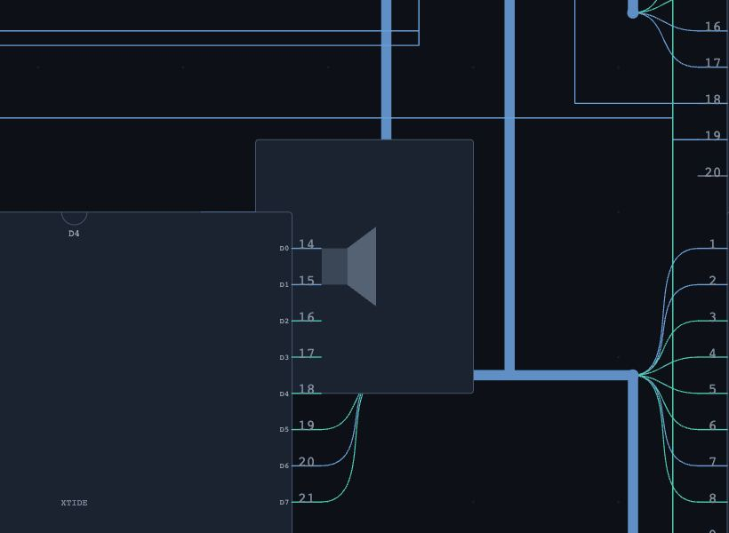
D1 — SPKR — The speaker shows its cone moving and labels the frequency it is being driven at.
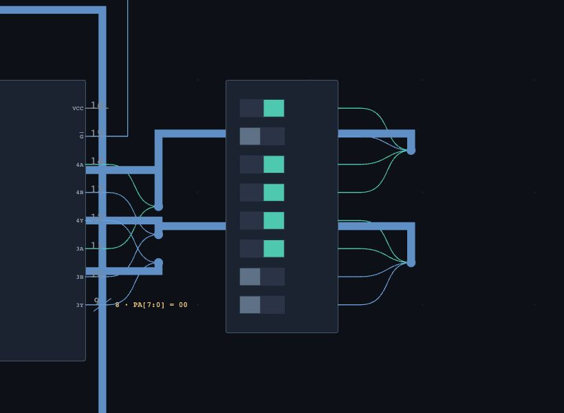
D2 — SW8 — The configuration switches — flip them while the machine runs and the BIOS sees a different machine next boot.
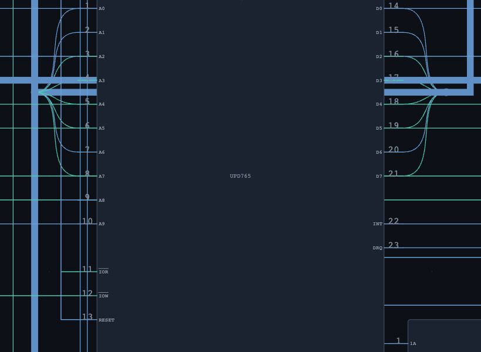
D3 — UPD765 — The floppy controller, moving sectors over DMA channel 2.
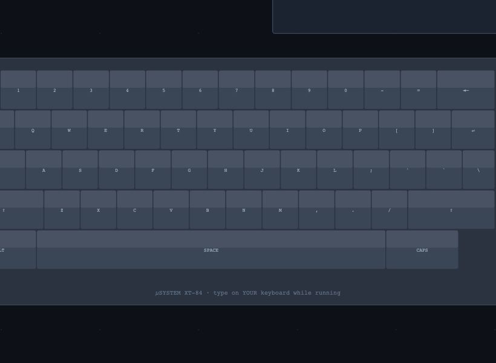
D7 — XTKBD — A full XT-84 keyboard drawn key by key — press a key on your own keyboard and you can see it depress here.
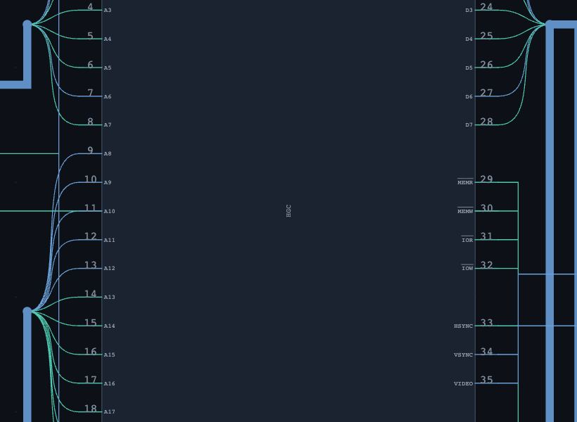
D8 — HGC — The Hercules card: 32K of video RAM, a 6845-style CRTC, and real HSYNC/VSYNC/VIDEO outputs.
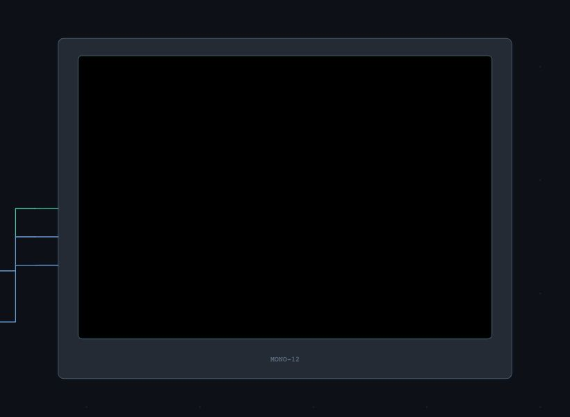
D9 — CRT — The monitor renders live from the video card's frame buffer, right on the schematic.
Monitor and keyboard
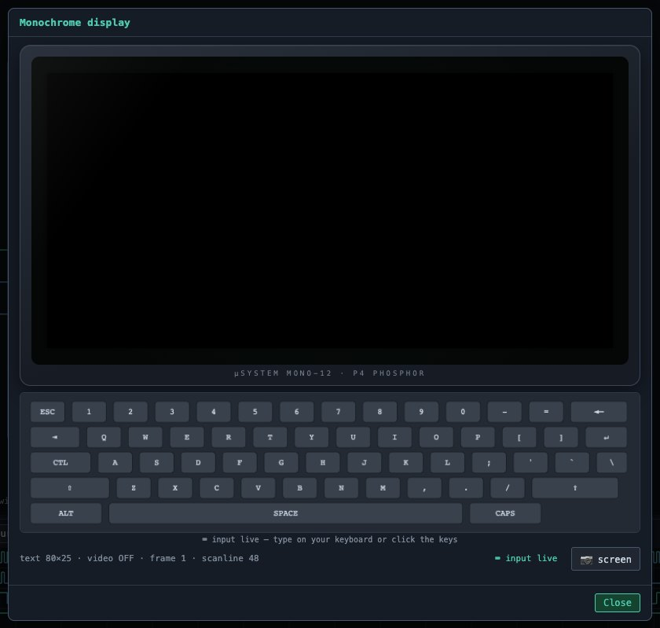
The CRT window — A full phosphor screen rendered from the real Hercules frame buffer — with scanlines, glow and glare — and the on-screen XT keyboard docked beneath it.
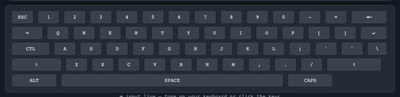
The keyboard dock — Click the keys, or type on your own keyboard: either way real scancodes travel the serial line into the shift register and raise IRQ1.
Devices at work
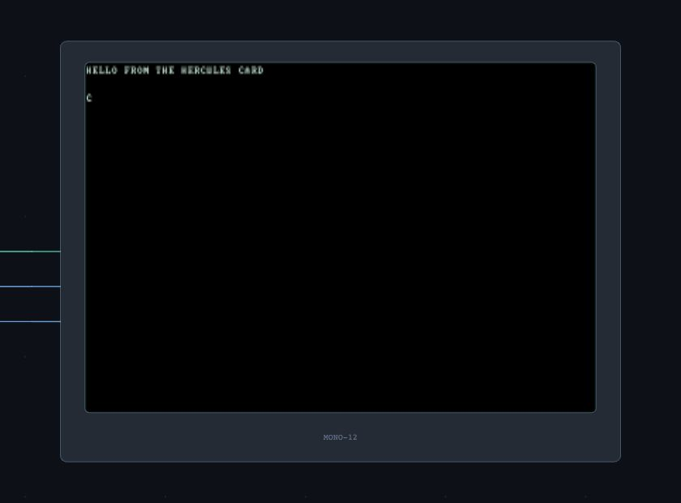
Video from a bare 8088 — No BIOS, no operating system: an 8088 writing characters straight into video memory at B000:0000.
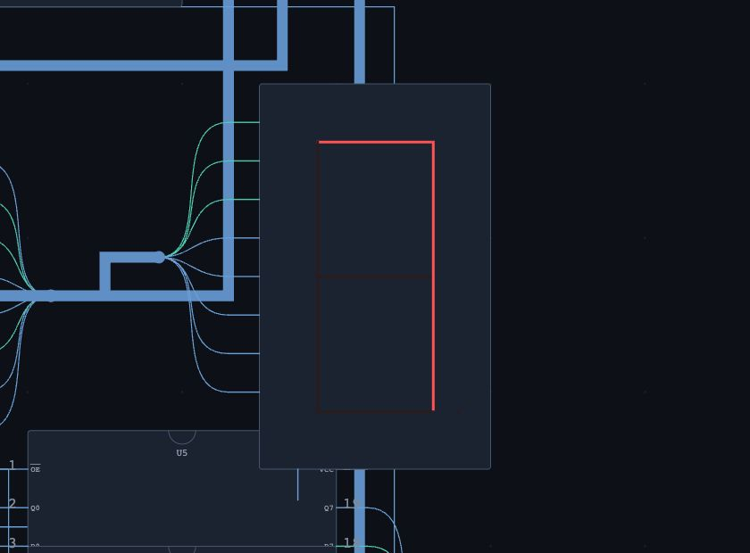
Seven-segment display — Common cathode, driven from a '373 output port, with the digits decoded in software from a segment table.
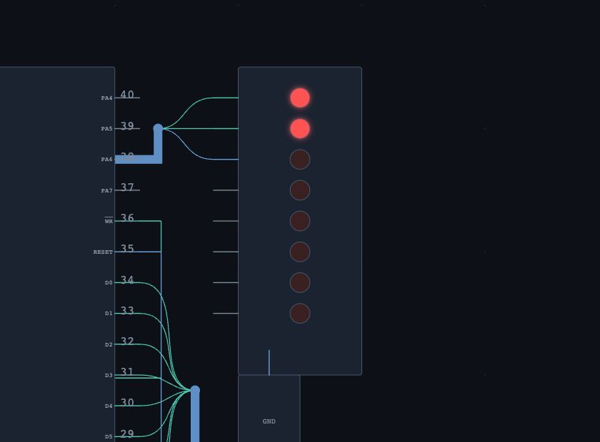
LEDs on a PPI port — An 8255 drives a traffic light from port A — the whole board was wired by autoconnect.
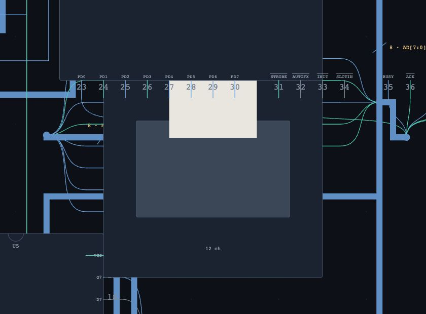
The printer — A Centronics printer with a real BUSY/ACK handshake — and paper you can read.
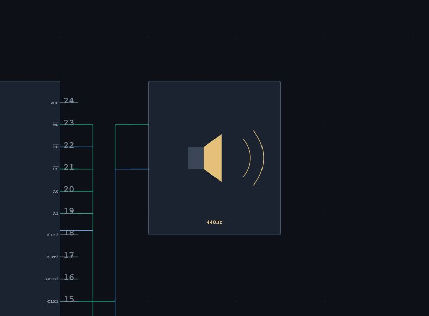
The speaker — The 8253 in mode 3 is a square-wave synthesiser; the symbol shows the live frequency.
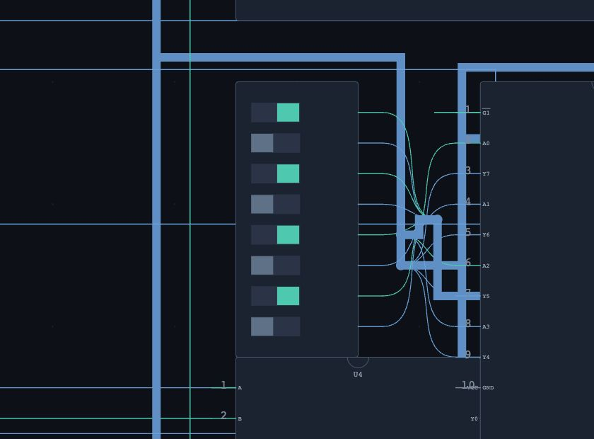
DIP switches — Eight switches you can flip while the machine runs.
Serial
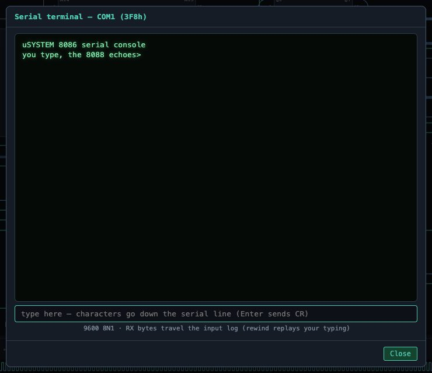
The serial terminal — Green phosphor on the other end of the wire: the 8250's transmit stream, and a box to type back down the line.